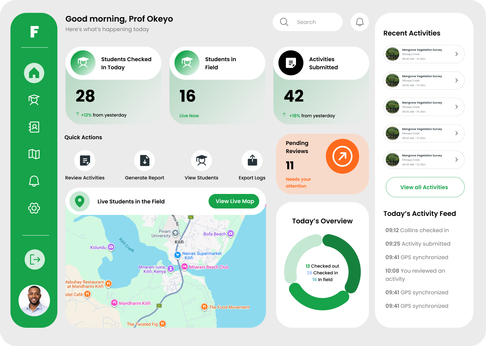
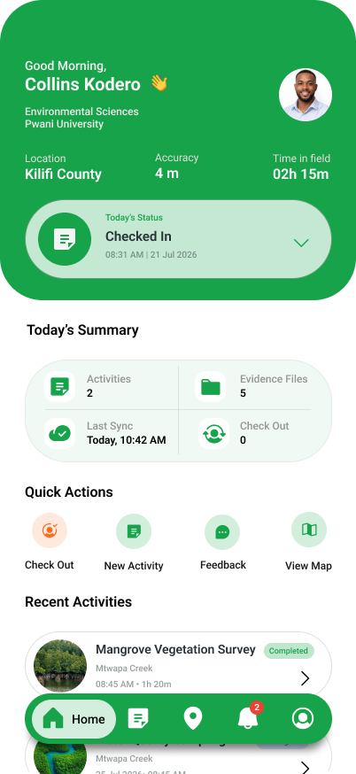
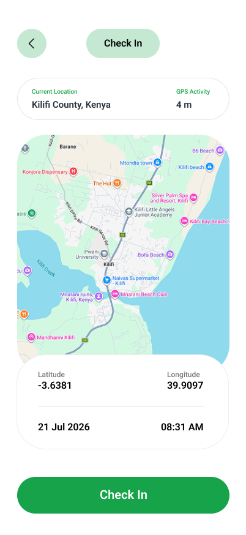

FieldTrack connects postgraduate students and supervisors through real-time field activity tracking, evidence management and remote research supervision.


Postgraduate students can conduct research across multiple field locations while supervisors remain at the university.
Traditionally, monitoring that work may depend on physical site visits, manual reports and delayed communication.
What if a postgraduate supervisor could monitor field activities without having to physically visit every research site?
FieldTrack was conceived around this challenge: connecting students in the field with their supervisors through verified activities, evidence and real-time information.
FieldTrack keeps every step of the fieldwork workflow connected.
Students check into their field activity with GPS location and timestamp information.
Document field activities, observations and research progress directly from the field.
Upload photographs, documents and other evidence supporting the field activity.
Supervisors remotely review submissions and approve quality evidence or request changes.

FieldTrack gives postgraduate students a simple mobile workflow for recording field activities, capturing evidence and keeping their supervisor updated.
Supervisors can monitor student activities, inspect submitted evidence, follow field progress and make review decisions without needing to physically visit every site.
FieldTrack brings activity records, evidence, timestamps and location information together so supervisors have greater context when reviewing postgraduate fieldwork.
Every review becomes part of a structured digital fieldwork record.
Supervisors can get a geographic view of active and recent student field activities.
Record field activities, upload evidence, capture locations and keep a structured history of research work.
Monitor research activities, review evidence, follow student progress and approve quality submissions remotely.
Centralize postgraduate fieldwork management, supervision, evidence and reporting across research programmes.
FieldTrack is being developed around the fieldwork supervision needs of postgraduate researchers and supervisors at Pwani University — creating a more connected, transparent and efficient way to manage field activities.
Record field activities, check in with GPS, upload evidence and keep your supervisor updated from the field.
Download Android App →Monitor students, view field activities, inspect evidence, follow locations and manage research supervision.
Open Supervisor Portal →Manage users, supervisors, departments, research programmes and system-wide operations.
Open Admin Portal →Give students the tools to document their work and supervisors the visibility to monitor, review and support research progress.